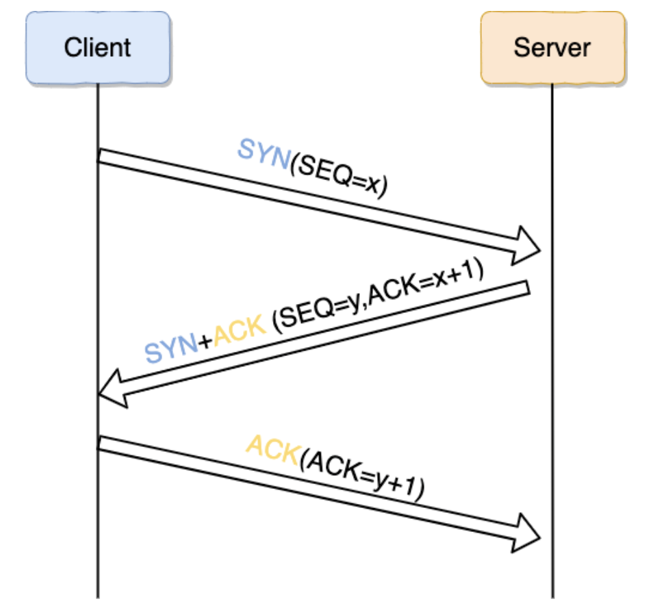
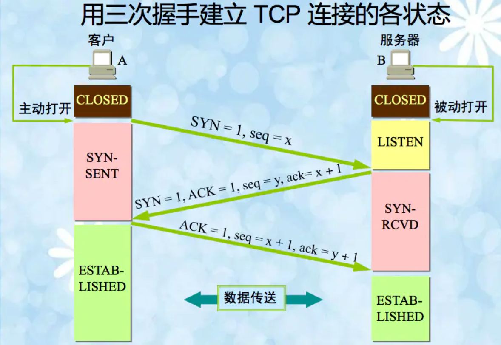
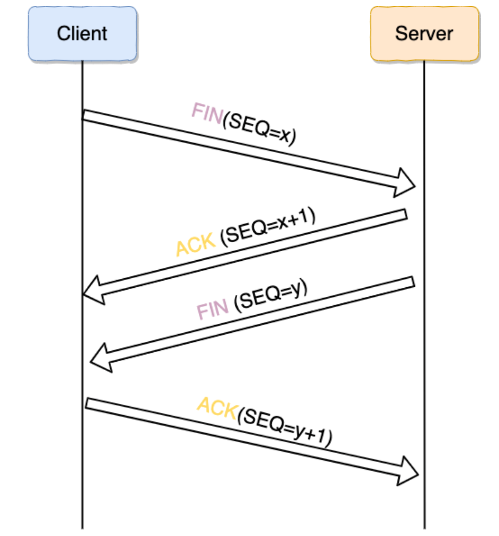
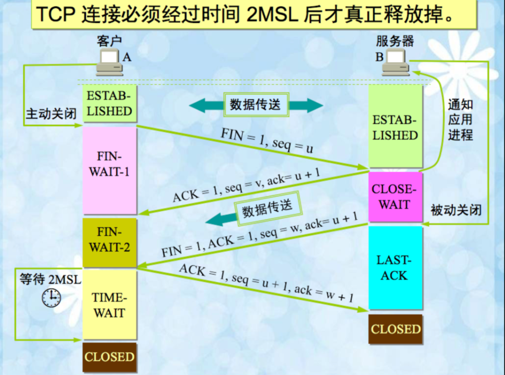

建立连接-TCP 三次握手

图解 TCP 三次握手
- 一次握手:客户端发送带有 SYN（SEQ=x） 标志的数据包 -> 服务端，然后客户端进入 SYN_SEND 状态，等待服务器的确认；
- 二次握手:服务端发送带有 SYN+ACK(SEQ=y,ACK=x+1) 标志的数据包 -> 客户端,然后服务端进入 SYN_RECV 状态
- 三次握手:客户端发送带有带有 ACK 标志的数据包–>服务端，然后客户端和服务器端都进入ESTABLISHED 状态，完成 TCP 三次握手。
当建立了 3 次握手之后，客户端和服务端就可以传输数据啦！
再来张详细的图片吧！这张图片画的太好了，哈哈，但是不是我画的。

图解TCP三次握手-详尽版
为什么要三次握手?
三次握手的目的是建立可靠的通信信道，说到通讯，简单来说就是数据的发送与接收，而三次握手最主要的目的就是双方确认自己与对方的发送与接收是正常的。
- 第一次握手 ：Client 什么都不能确认；Server 确认了对方发送正常，自己接收正常
- 第二次握手 ：Client 确认了：自己发送、接收正常，对方发送、接收正常；Server 确认了：对方发送正常，自己接收正常
- 第三次握手 ：Client 确认了：自己发送、接收正常，对方发送、接收正常；Server 确认了：自己发送、接收正常，对方发送、接收正常
三次握手就能确认双方收发功能都正常，缺一不可。
第 2 次握手传回了 ACK，为什么还要传回 SYN？
接收端传回发送端所发送的 ACK 是为了告诉客户端，我接收到的信息确实就是你所发送的信号了，这表明从客户端到服务端的通信是正常的。而回传 SYN 则是为了建立并确认从服务端到客户端的通信。”
SYN 同步序列编号(Synchronize Sequence Numbers) 是 TCP/IP 建立连接时使用的握手信号。在客户机和服务器之间建立正常的 TCP 网络连接时，客户机首先发出一个 SYN 消息，服务器使用 SYN-ACK 应答表示接收到了这个消息，最后客户机再以 ACK(Acknowledgement）消息响应。这样在客户机和服务器之间才能建立起可靠的 TCP 连接，数据才可以在客户机和服务器之间传递。
断开连接-TCP 四次挥手

图解TCP四次挥手
断开一个 TCP 连接则需要“四次挥手”：
- 第一次挥手 ：客户端发送一个 FIN（SEQ=X） 标志的数据包->服务端，用来关闭客户端到服务器的数据传送。然后，客户端进入 FIN-WAIT-1 状态。
- 第二次挥手 ：服务器收到这个 FIN（SEQ=X） 标志的数据包，它发送一个 ACK （SEQ=X+1）标志的数据包->客户端 。然后，此时服务端进入CLOSE-WAIT状态，客户端进入FIN-WAIT-2状态。
- 第三次挥手 ：服务端关闭与客户端的连接并发送一个 FIN (SEQ=y)标志的数据包->客户端请求关闭连接，然后，服务端进入LAST-ACK状态。
- 第四次挥手 ：客户端发送 ACK (SEQ=y+1)标志的数据包->服务端并且进入TIME-WAIT状态，服务端在收到 ACK (SEQ=y+1)标志的数据包后进入 CLOSE 状态。此时，如果客户端等待 2MSL 后依然没有收到回复，就证明服务端已正常关闭，随后，客户端也可以关闭连接了。
只要四次挥手没有结束，客户端和服务端就可以继续传输数据！
再继来张详细的图片吧！这张图片画的太好了，哈哈，但是不是我画的。

图解TCP四次挥手
为什么要四次挥手
任何一方都可以在数据传送结束后发出连接释放的通知，待对方确认后进入半关闭状态。当另一方也没有数据再发送的时候，则发出连接释放通知，对方确认后就完全关闭了 TCP 连接。
举个例子：A 和 B 打电话，通话即将结束后。
- 第一次挥手 ：A 说“我没啥要说的了”
- 第二次挥手 ：B 回答“我知道了”，但是 B 可能还会有要说的话，A 不能要求 B 跟着自己的节奏结束通话
- 第三次挥手 ：于是 B 可能又巴拉巴拉说了一通，最后 B 说“我说完了”
- 第四次挥手 ：A 回答“知道了”，这样通话才算结束。
为什么不能把服务器发送的 ACK 和 FIN 合并起来，变成三次挥手？
因为服务器收到客户端断开连接的请求时，可能还有一些数据没有发完，这时先回复 ACK，表示接收到了断开连接的请求。等到数据发完之后再发 FIN，断开服务器到客户端的数据传送。
如果第二次挥手时服务器的 ACK 没有送达客户端，会怎样？
客户端没有收到 ACK 确认，会重新发送 FIN 请求。
为什么第四次挥手客户端需要等待 2*MSL（报文段最长寿命）时间后才进入 CLOSED 状态？
第四次挥手时，客户端发送给服务器的 ACK 有可能丢失，如果服务端没有因为某些原因而没有收到 ACK 的话，服务端就会重发 FIN，如果客户端在 2*MSL 的时间内收到了 FIN，就会重新发送 ACK 并再次等待 2MSL，防止 Server 没有收到 ACK 而不断重发 FIN。
MSL(Maximum Segment Lifetime) : 一个片段在网络中最大的存活时间，2MSL 就是一个发送和一个回复所需的最大时间。如果直到 2MSL，Client 都没有再次收到 FIN，那么 Client 推断 ACK 已经被成功接收，则结束 TCP 连接。


...
...
Copyright 2021 sunfy.top ALL Rights Reserved